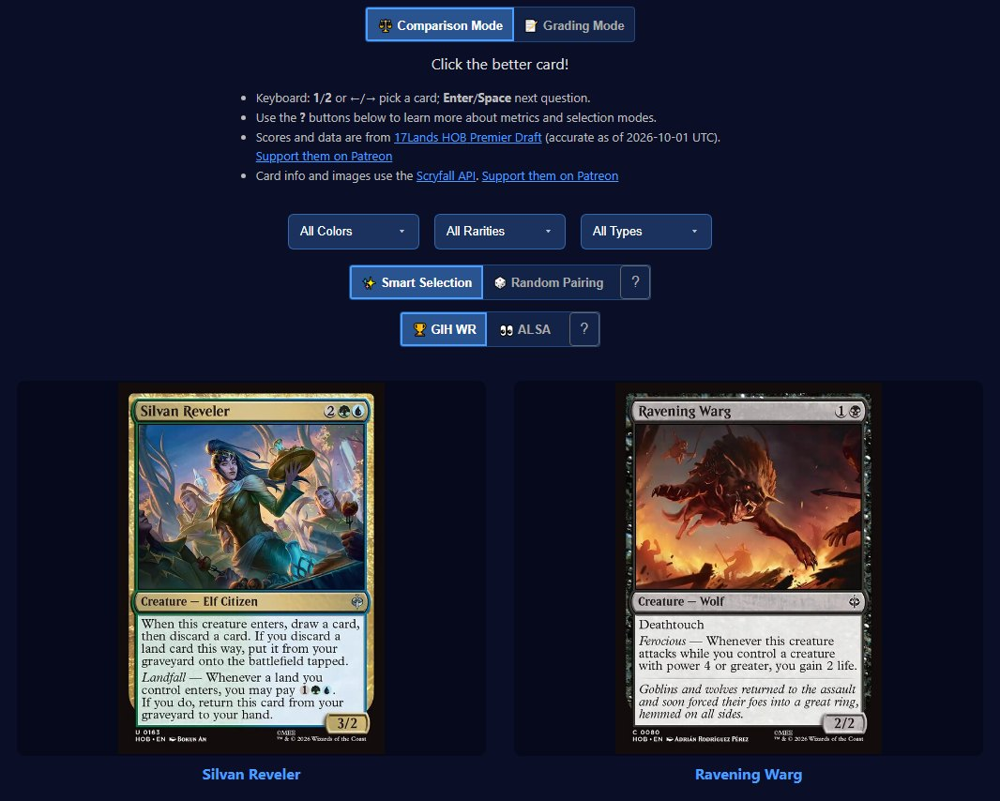

MTG Draft Analytics.
Interactive tools, card ratings, and quizzes for Magic: The Gathering Limited — set by set, from Bloomburrow to Reality Fracture.
Featured

Multi-Set Color Wheel
Interactive draft-archetype color wheel — switch between sets, hover for card images and signpost cards.

17Lands Card Evaluation Quiz
Test your card evaluation against real 17Lands win-rate data, with Wordle-style score sharing.
Tools & Analytics
Oracle Tags Analysis
Which Scryfall oracle tags are concentrated in each color and color pair, with a Scryfall search for every entry. Opens on Reality Fracture; the dropdown has every Standard set plus a Standard format view.
Open tool →Card Study — Spaced Repetition
An Anki-style spaced-repetition mode for learning the cards in a set.
Open quiz →Format Comparison
Compare card values across Pauper, Modern and Standard.
Open tool →GIH-WR Distribution
Games-in-hand win-rate distribution with SD-based grade boundaries.
Open chart →ALSA Distribution
Average-last-seen-at distribution chart.
Open chart →Pauper
the commons-only constructed formatPauper Card List
Searchable Pauper reference, sorted by frequency.
Open tool →Pauper Frequency Cloud
Visual cloud of the most-played Pauper cards.
Open tool →Pauper Card Poster
Build a printable poster of Pauper staples.
Open tool →Pauper Mono Red Madness Stock List
The stock 60 nearly every Mono Red Madness deck plays, and how far each of 1,506 tournament decks strays from it.
Open tool →Set specific pages
grouped by set, newest firstThe Hobbit
released 14 Aug 2026Marvel Super Heroes
released 26 Jun 2026Secrets of Strixhaven
released 24 Apr 2026SOS Normalized Ratings
Reviews from many Strixhaven reviewers, normalized with z-scores — average score plus a controversy score.
Open tool →Under / Over-rated — SOS
Strixhaven cards where reviewers and data disagree most.
Open tool →SOS Top Cards by Color
Best commons, uncommons and rares/mythics by color.
Open tool →SOS Avg Scores by Category
Average normalized scores by color & rarity, booster-weighted.
Open tool →SOS Scores — Line Graphs
Card scores plotted by rarity then mana value, with image hover.
Open tool →SOS Archetype Analysis
Deep-dive into expert accuracy across Strixhaven archetypes.
Open tool →Teenage Mutant Ninja Turtles
released 6 Mar 2026Lorwyn Eclipsed
released 23 Jan 2026ECL Normalized Ratings
Z-score normalized ratings across 5 major Lorwyn Eclipsed reviewers — best and most controversial cards.
Open tool →Under / Over-rated — ECL
Where expert ratings diverge most from community win-rate data.
Open tool →ECL Cheatsheet
Quick reference for Lorwyn Eclipsed draft.
Open tool →